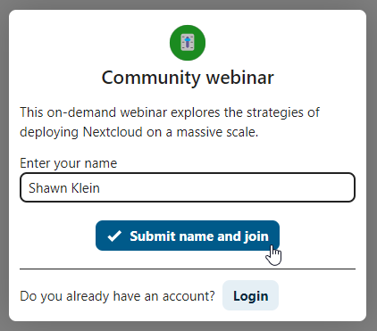
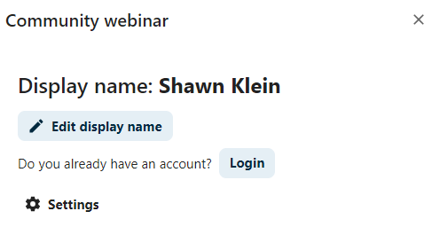
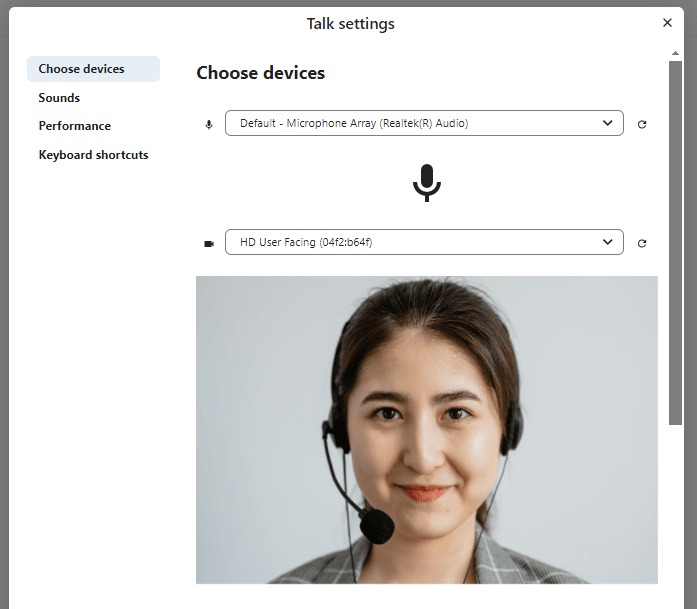
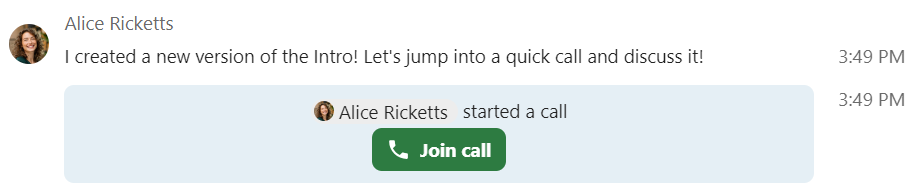
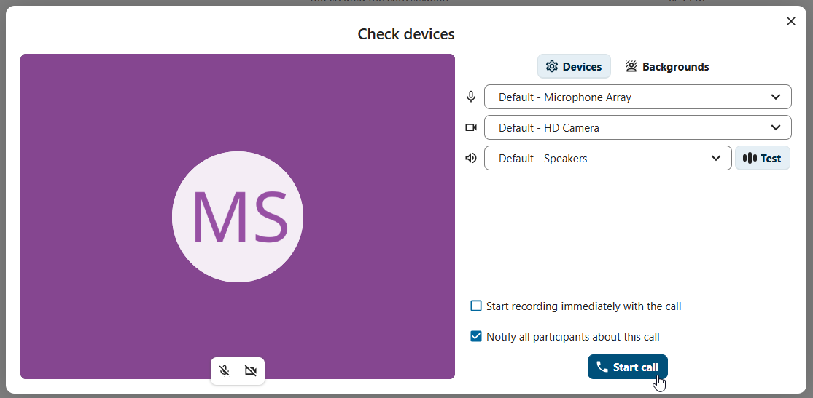
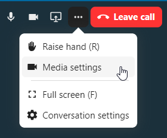
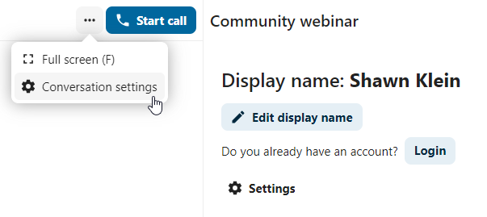
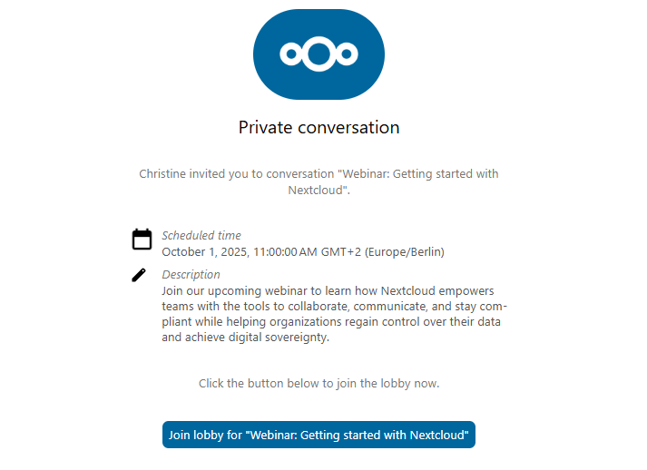
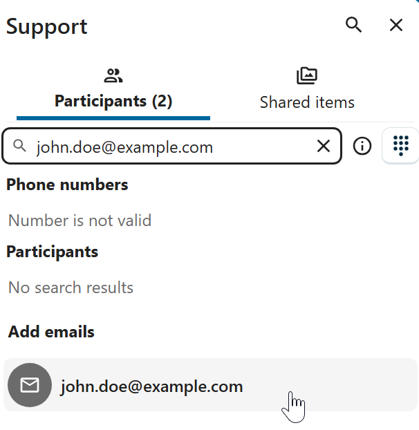
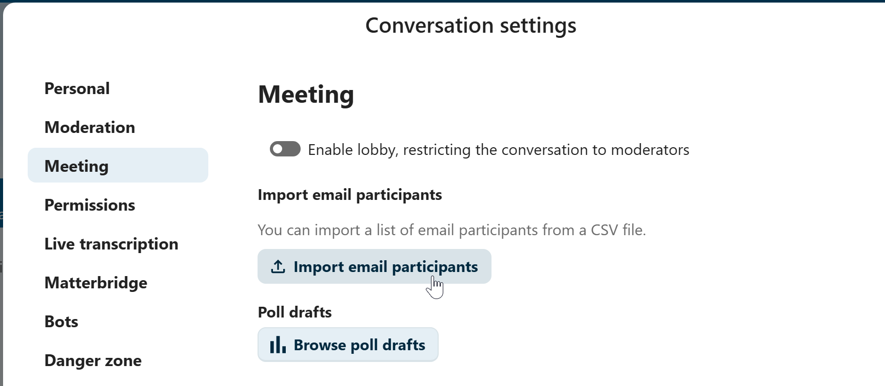

Присоединение к вызову или чату в качестве гостя
Если вам прислали ссылку на обсуждение в «Конференциях Nextcloud», присоединиться можно гостем, без учётной записи Nextcloud.
Присоединение к чату
Если вам прислали ссылку на обсуждение в чате, откройте её в браузере, чтобы присоединиться. Перед этим нужно будет ввести имя.


Позже имя можно изменить кнопкой Изменить на верхней панели.


Параметры камеры и микрофона находятся в меню Параметры. Там же есть список комбинаций клавиш.


Присоединение к вызову
Вызов можно начать в любой момент кнопкой Начать вызов. Остальные участники получат уведомление и смогут присоединиться. Если вызов уже начал кто-то другой, кнопка станет зелёной Присоединиться к вызову.


Перед присоединением показывается проверка устройств: можно выбрать камеру и микрофон, включить размытие фона или присоединиться без устройств.


Во время вызова параметры камеры и микрофона находятся в меню ... на верхней панели.


Во время вызова микрофон и видео отключаются кнопками отключения микрофона и камеры на панели вызова или комбинациями клавиш M (звук) и V (видео). Звук также можно переключать клавишей Пробел: если микрофон выключен, при нажатом пробеле он включается, и вы можете говорить, пока не отпустите клавишу; если включён — при нажатом пробеле выключается, пока вы не отпустите её.
Видео можно скрыть (удобно при демонстрации экрана) маленькой стрелкой над видеопотоком и так же вернуть обратно.
Полноэкранный режим и другие параметры
В меню обсуждения можно включить полноэкранный режим, то же делает клавиша F. В параметрах обсуждения находятся параметры уведомлений и полное описание обсуждения.


Присоединение гостем по эл. почте
Гостя можно пригласить в обсуждение по эл. почте. В письме есть ссылка для присоединения; перейдя по ней, гость попадёт в обсуждение с индивидуальным токеном доступа.


Для приглашения введите адрес эл. почты в поле поиска на вкладке Участники.


Участников по эл. почте можно пригласить списком, загрузив CSV-файл. Эта возможность находится в параметрах обсуждения, в разделе Встреча.

